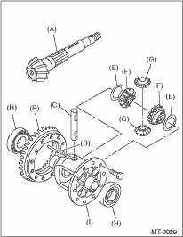
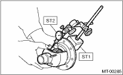
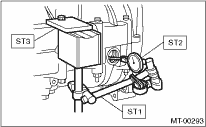
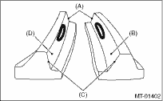

Repair or replace the differential gear in the following cases:
• When the hypoid driven gear and drive pinion shaft tooth surfaces are damaged, excessively worn, or seized.
• When the roller bearing on the drive pinion shaft has a worn or damaged roller path.
• When there is damage, wear or seizure of the differential bevel pinion, differential bevel gear, washer, pinion shaft or straight pin.
• When the differential case has worn or damaged sliding surfaces.

|
(A) |
Drive pinion shaft |
|
(B) |
Hypoid drive gear |
|
(C) |
Pinion shaft |
|
(D) |
Straight pin |
|
(E) |
Washer |
|
(F) |
Differential bevel gear |
|
(G) |
Differential bevel pinion |
|
(H) |
Roller bearing |
|
(I) |
Differential case |
1. DIFFERENTIAL BEVEL PINION GEAR BACKLASH
Measure the backlash between differential bevel gear and pinion. If backlash is not within specified value, install a suitable washer to adjust. 
| ST1 498247001 | MAGNET BASE |
| ST2 498247100 | DIAL GAUGE |
Standard backlash
0.13 — 0.18 mm (0.0051 — 0.0071 in)

1. Set the ST1, ST2 and ST3. Insert the needle through transmission oil drain plug hole so that the needle comes in contact with the tooth surface on the right corner, and check the backlash.
| ST1 498247001 | MAGNET BASE |
| ST2 498247100 | DIAL GAUGE |
| ST3 498255400 | PLATE |
2. Install the SUBARU genuine axle shafts to both side, rotate in the rotating direction and the reverse direction so that the gauge contacts with the tooth surface and read the dial gauge.
| Part No. 38415AA100 | AXLE SHAFT |
Backlash:
0.13 — 0.18 mm (0.0051 — 0.0071 in)

3. If the backlash is outside the specified range, adjust it by turning the holder in the RH side case.
3. TOOTH CONTACT OF HYPOID GEAR
Check tooth contact of hypoid gear as follows: Apply a thin uniform coat of dye penetrant on both teeth surfaces on 3 or 4 teeth of the hypoid gear. Move the hypoid gear back and forth by turning the transmission main shaft until a definite contact pattern is developed on the hypoid gear, and judge whether face contact is correct. If it is improper, make adjustment.
Tooth contact is correct.

|
(A) |
Toe |
|
(B) |
Coast side |
|
(C) |
Heel |
|
(D) |
Drive side |